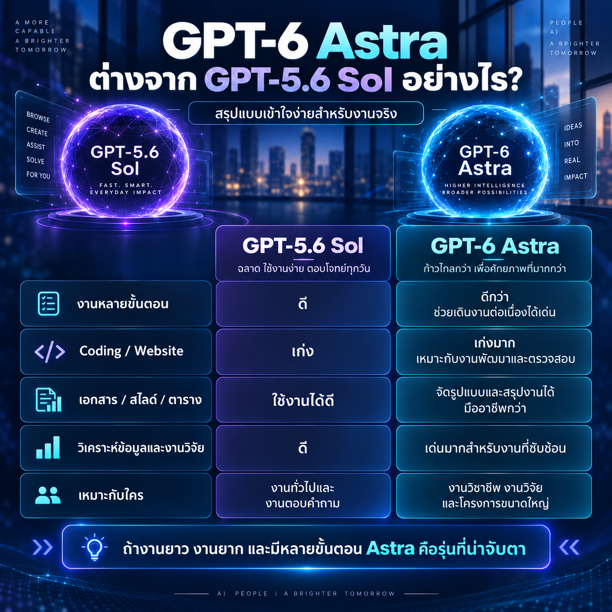
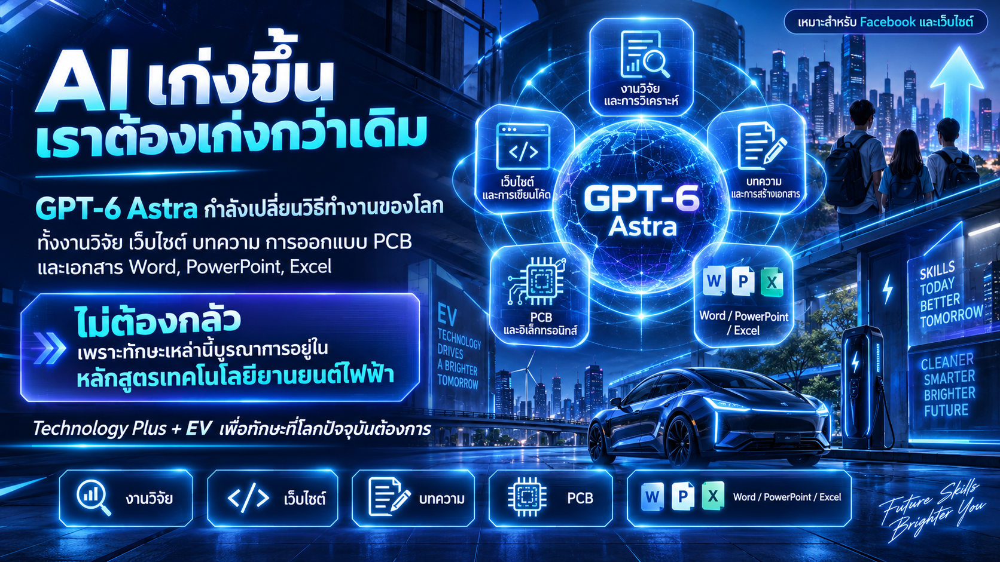

ช่วงไม่กี่ปีที่ผ่านมา เราได้ยินกันบ่อยว่า “AI กำลังจะเปลี่ยนโลกการทำงาน” แต่วันนี้คำว่า “กำลังจะ” อาจต้องเปลี่ยนเป็น “กำลังเกิดขึ้นแล้ว”
จากประสบการณ์ในการนำ AI มาใช้พัฒนาเว็บไซต์จริง ผมพบว่าเครื่องมืออย่าง ChatGPT สามารถช่วยตั้งแต่การวางโครงสร้างเว็บไซต์ เขียน HTML และ CSS ปรับ Responsive Design วิเคราะห์ปัญหาจาก Screenshot ไปจนถึงการแก้ไขรายละเอียด ของเว็บไซต์อย่างต่อเนื่อง
GPT-6 Astra คืออะไร?
OpenAI เปิดตัว GPT-6 Astra โดยมุ่งเน้นความสามารถในการทำงาน ที่มีความซับซ้อนมากขึ้น โดยเฉพาะด้าน computer use, browsing, software engineering, science และ professional work รวมถึงการดำเนินงาน ที่ประกอบด้วยหลายขั้นตอน
สิ่งที่น่าสนใจสำหรับผม ไม่ใช่เพียงคะแนน Benchmark แต่คือคำถามว่า เมื่อนำ AI รุ่นนี้มาใช้กับ งานจริงของนักวิจัย อาจารย์ วิศวกร และนักพัฒนา จะสามารถช่วยเราได้มากเพียงใด

5 งานจริงที่ผมจะทดลองกับ GPT-6 Astra
งานวิจัย IEEE Transactions
ทดลองใช้ AI ช่วยตรวจสอบ Manuscript วิเคราะห์ผลการทดลอง ตรวจความสอดคล้องของเนื้อหา Figure และ Table รวมถึงการเตรียมคำตอบ Reviewer โดยนักวิจัยยังคงเป็นผู้ตัดสินใจหลัก
Website Development
ทดลองตั้งแต่ HTML, CSS, Responsive Design, Debugging และ Frontend QA เพื่อดูว่า AI สามารถช่วย จากแนวคิดไปจนถึงเว็บไซต์ ที่ใช้งานจริงได้มากเพียงใด
บทความและองค์ความรู้
เปลี่ยนองค์ความรู้ทางวิศวกรรม ให้กลายเป็นบทความเว็บไซต์ เอกสารประกอบการสอน Facebook Content และ Infographic ที่คนทั่วไปเข้าใจได้ง่ายขึ้น
PCB / Altium
ทดลองวิเคราะห์ PCB Layout, DRC, Clearance, Component Placement, Overlay และปัญหาจาก Screenshot เพื่อประเมินว่า AI ช่วยงานวิศวกรรมได้ลึกเพียงใด
Word / PowerPoint / Excel
ทดลองสร้างเอกสาร Presentation ตารางวิเคราะห์ Proposal รายงาน และสื่อการสอน จากข้อมูลดิบไปสู่ผลงาน ที่พร้อมใช้งานจริง
แล้ว AI จะทำให้คนตกงานหรือไม่?
ผมคิดว่าคำถามที่สำคัญกว่า อาจไม่ใช่ว่า “AI จะทำให้คนตกงานหรือไม่” แต่คือ คนที่ใช้ AI เป็น กับคนที่ไม่ใช้ AI จะมีความสามารถในการทำงาน แตกต่างกันมากเพียงใด
AI อาจไม่ได้ทำให้อาชีพทั้งหมดหายไป แต่กำลังลดเวลาในการทำงานหลายประเภท ทำให้คนหนึ่งคนสามารถทำงาน ได้กว้างขึ้นกว่าเดิม
นักวิจัยสามารถสร้างเว็บไซต์ได้ วิศวกรสามารถสร้าง Content ได้ อาจารย์สามารถสร้าง Infographic ได้ และผู้ที่มีความรู้เฉพาะทาง สามารถใช้ AI ขยายขีดความสามารถ ของตัวเองได้มากขึ้น

Technology Plus + EV
อนาคตของการศึกษา ไม่ควรสอนให้นักศึกษาแข่งขันกับ AI ด้วยการจำข้อมูลให้มากกว่า AI แต่ควรสร้างพื้นฐานวิชาชีพที่แข็งแรง พร้อมกับความสามารถในการใช้เทคโนโลยี เพื่อแก้ปัญหาจริง
เทคโนโลยียานยนต์ไฟฟ้าในปัจจุบัน ไม่ได้ประกอบด้วยเรื่องรถยนต์เพียงอย่างเดียว แต่เป็นการบูรณาการ
Battery + Power Electronics + Embedded System + Motor + Control + Communication + Software + AI + Data
นี่คือแนวคิดของ Technology Plus + EV เพื่อพัฒนาทักษะที่โลกปัจจุบันต้องการ และสร้างพื้นฐานสำหรับเทคโนโลยีในอนาคต
ต่อจากนี้ผมจะทดลองให้ดูจริง
บทความนี้เป็นเพียงจุดเริ่มต้น ผมจะค่อย ๆ ทดลอง GPT-6 Astra กับงานจริง และนำผลมาแบ่งปัน ทั้งส่วนที่ทำได้ดี ส่วนที่ยังมีข้อจำกัด ข้อผิดพลาดที่พบ และสิ่งที่มนุษย์ยังต้องเป็น ผู้ตรวจสอบและตัดสินใจด้วยตัวเอง
แหล่งข้อมูลเพิ่มเติม
OpenAI — GPT-6 Astra: A New Generation of Intelligence